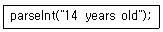
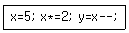
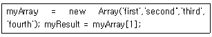
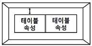
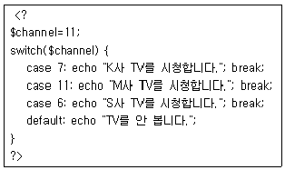
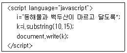
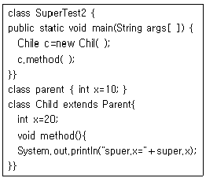
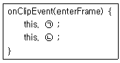

멀티미디어콘텐츠제작전문가(구) (2012-08-26 기출문제)
1과목: 멀티미디어개론
1. 텍스트(Text)에서 사용하는 용어 중 각 글자의 문자 메트릭과 글자 쌍의 자각 조정을 의미하는 것은?
- 세리프(serif)
- 레딩(leading)
- 커닝(Kerning)
- 랜섬노트(rasom-note)
(정답률: 알수없음)

2. 다음 중 DMB(Digital Multimedia Broadcasting)의 일반적인 특징이 아닌 것은?
- 효과적인 이동체의 수신이 가능하다.
- 채널의 오류정정이 불가능하다.
- CD급 음직의 오디오 서비스와 데이터 방송이 가능하다.
- 디지털 기반의 압축 및 재생기술을 통해 다채녈 방송이 가능하다.
(정답률: 알수없음)
3. 인터넷에 연결된 일련의 시스템들을 이용해 단일 사이트에 대한 플러드 공격(Flood Attack)을 시도하는 것을 무엇이라 하는가?
- DDoS
- Teardrop
- Worm
- Crack
(정답률: 알수없음)
4. 파일 전송 통신규약인 FTP(File Transfer Protocol)의 파일 전송 모드가 아닌 것은?
- 스트림 모드
- 블록 모드
- 압축모드
- 페이지 모드
(정답률: 알수없음)
5. IP(Inter Protocol) 169.5.255.255는 어느 주소에 속하는가?
- 호스트 IP주소
- 직접 브로드캐스트 주소
- 네트워크 주소
- 제한된 브로드캐스트 주소
(정답률: 알수없음)
6. 다음 중 IP-TV에 대한 설명으로 거리가 먼 것은?
- 초고속 광대역 네트워크를 통해 서비스 되는 디지털 채널 방송이다.
- 양방향의 데이터 서비스를 제공한다.
- 셋톱박스를 통하여 디지털 비디오 레코딩 기능 등 다양한 멀티미디어 기능을 제공한다.
- 필수 장비로 컴퓨터가 필요하다.
(정답률: 알수없음)
7. DVD(Digital Versatile Disc)에 대한 설명으로 거리가 먼 것은?
- 기록면이 단면이므로 CD와 유사하다.
- 저장용량은 약 4.7GB이며, 17GB이상도 기록 가능하다.
- 원래 비디오 데이터를 저장하기 위해 개발되었다.
- 음악 등을 기록하기 위한 DVD Audio도 개발되었다.
(정답률: 알수없음)
8. UNIX 시스템에서 커널이 수행하는 기능으로 거리가 먼 것은?
- 프로세스 관리
- 기억장치 관리
- 입출력 관리
- 명령어 해석
(정답률: 알수없음)
9. 다음 중 PCM(Pulse Code Modulation) 전송에서 송신측 과정은?
- 음성-표본화-양자화-부호화
- 음성-표본화-부호화-양자화
- 음성-부호화-양자화-표본화
- 음성-부호화-표본화-양자화
(정답률: 알수없음)
10. IANA(Internet Assigned Numbers Authority; 인터넷 할당 번호 관리기관)에서 지정한 잘 알려진 포트 번호(WELL KNOW PORT NUMBERS)와 서비스의 연결이 틀린 것은?
- 21-FTP
- 22-SSH
- 23-Telnet
- 25-POP3
(정답률: 알수없음)
11. MS가 발표한 PC관련 기술에 인터넷 환경을 연결시키는 것으로 웹의 내용을 더욱 활동적이고 상호동작이 가능하도록 하기 위한 목적으로 발표하였지만, 보안 취약, 클라이언트 컴퓨터의 과도한 부담 및 IE를 제외한 웹브라우저에서 실행되지 않는 등의 불편함으로 폐기 수순을 밝고 있는 것은?
- MSDN
- Active-X
- PINK
- xml
(정답률: 알수없음)
12. 감염대상이 마이크로소프트사의 엑셀과 워드에서 사용하는 문서 파일을 읽을 때 감염되는 바이러스는?
- 부트 바이러스
- 트로이목마 바이러스
- 도스 바이러스
- 매크로 바이러스
(정답률: 알수없음)
13. IPSec(Internet Protocol Security)에서 제공되는 기능으로 거리가 먼 것은?
- 기밀성 보장
- 인증
- 접속제어
- 오류보고
(정답률: 알수없음)
14. 다음 중 LAN에 있는 공격 대상에게 MAC주소를 속여 클라이언트에서 서버로 패킷이나 서버에서 클라이언트로 가는 패킷을 중간에 가로채는 공격은?
- DNS 스푸핑
- ARP 스푸핑
- Dos
- Brute force
(정답률: 알수없음)
15. 저작권 보호 또는 문서의 증빙을 위해 문서 또는 파일에 특별한 인식 표시를 하는 기술은?
- PGP
- S/MIME
- WaterMark
- PEM
(정답률: 알수없음)
16. 다음 중 전자우편 보안 기술이 아닌 것은?
- S/MIME
- PGP
- SSL
- PEM
(정답률: 알수없음)
17. 다음 중 가장 사용빈도가 높은 문자는 가장 짧은 코드로 표현하고, 가장 사용빈도가 적은 문자는 가장 긴 코드로 표현하는 압축 기법은?
- JPEG 방식
- 허프만 코딩 방식
- MPEG 방식
- 줄길이 부호화 방식
(정답률: 알수없음)
18. 다음 애니메이션 기법 중 키 프레임 사이의 중간모습을 자동적으로 만들어주는 기법은?
- 양파껍질 기법(Onion-Skinning)
- 트위닝 기법(Tweening)
- 도려내기 기법(Cut-out)
- 반복 기법(Cycling)
(정답률: 알수없음)
19. 전송계층에서 인터넷을 통해 데이터를 전송할 때 데이터를 세그먼트 단위로 나누어 전송하고 오류 제어 및 흐름 제어를 제공하는 프로토콜은?
- TCP
- UDP
- ICMP
- SMTP
(정답률: 알수없음)
20. IPv6에 대한 설명으로 거리가 먼 것은?
- 128비트의 IP주소 크기를 가지고 있다.
- 다섯 개의 클래스로 구성된 2-레벨 주소구조로 되어있다.
- 네트워크의 고속화와 그래픽과 비디오 등이 혼합된 미디어 전송요구에 부합되도록 설계되었다.
- 암호화와 인증 옵션들은 패킷의 신뢰성과 무결성을 제공한다.
(정답률: 알수없음)
21. 44.1[kHz]로 샘플링한 CD의 경우 이론적으로 재생할 수 있는 최대 주파수에 가장 근접한 주파수[kHz]는?
- 5
- 12
- 13
- 22
(정답률: 알수없음)
22. 다음 중 컴퓨터 그래픽과 비디오카메라의 비디오신호를 동기화 시켜주는 장치는?
- resolution
- frequency
- color palettes
- genlock
(정답률: 알수없음)
23. 음의 세기(sound intensity)단위는?
- W/m2
- erg/m2
- kgf
- W2/cm
(정답률: 알수없음)
24. 다음 중 유럽의 지상파 디지털 TV 전송 방식은?
- DVB-T
- ATSC
- ISDB-T
- NTSC
(정답률: 알수없음)
25. 영상의 명암 값 프로필을 보여주기 위해 사용되는 방식은?
- 히스토그램
- 앤티앨리어싱
- 디더링
- 블러링
(정답률: 알수없음)
2과목: 멀티미디어기획및디자인
26. 시각디자인은 여러 표현 요소들로 이루어진다. 다음 중 문자적인 요소를 가장 많이 가지고 있는 것은?
- 포스터(Poster)
- 타이포그래피(Typography)
- 일러스트레이션(Illustration)
- 애니메이션(Animation)
(정답률: 알수없음)
27. 저드(D.Judd)에 의해 제시된 “색의 체계에서 규칙적으로 선택된 색들의 조합은 대체로 조화롭다.”에 해당하는 색채 조화의 원리는?
- 미모호성의 원리
- 유사성의 원리
- 질서의 원리
- 친밀성의 원리
(정답률: 알수없음)
28. 디자인의 원리 중 Symmetry에 대한 설명으로 맞는 것은?
- 변화 속에서 통일감을 얻는다.
- 길이의 비례 관계를 말한다.
- 자연물 등의 대칭된 형태에서 느낄 수 있다.
- 하나의 직선이나 곡선 또는 단순형태에서는 느낄 수 없다.
(정답률: 알수없음)
29. 디자인의 요소에 대한 설명으로 잘못된 것은?
- 면은 공간을 구성하는 단위로서 이동하는 선의 자취가면을 이룬다.
- 선의 이동에 의해 만들어진 면을 포지티브한 면이라고 한다.
- 수직선은 평화, 정지를 의미한다.
- 점은 크기가 없고 위치만을 가진다.
(정답률: 알수없음)
30. 형태구성의 부분간의 상호관계에 있어 반복-연속되어 생명감과 존재감을 가장 강하게 나타내는 디자인 원리는?
- 조화
- 균형
- 리듬
- 비례
(정답률: 알수없음)
31. 다음 중 황금분할의 비는?
- 1.5:1
- 2.518:1
- 1.218:1
- 1.618:1
(정답률: 알수없음)
32. Ecology design 이란 말의 뜻은?
- 인간만을 위한 디자인
- 인간과 기계와의 조화를 위한 디자인
- 자연과 사회와의 조화를 위한 디자인
- 인간과 자연과의 조화를 위한 디자인
(정답률: 알수없음)
33. 색채 지각 반응 효과에서 명시성에 가장 크게 영향을 미치는 속성은?
- 명도 차이
- 채도 차이
- 색상 차이
- 질감 차이
(정답률: 알수없음)
34. 2차원 공간에 정지되었던 문자를 동적으로 움직이게 하는 디자인으로 다양한 멀티미디어 요소를 이용해 효과적으로 의미를 전달할 수 있는 개념은?
- 그리드
- VRML
- 레이아웃
- 모션 타이포그래피
(정답률: 알수없음)
35. 은유의 의미를 내포하는 단어로 사용자가 접근하려는 인터페이스 환경을 쉽게 이해하도록 익숙한 개념적 모델을 제공하기 위해 사용되는 것은?
- 그리드
- 가이드
- 레이아웃
- 메타포
(정답률: 알수없음)
36. 점묘화 또는 모자이크 벽화에서 볼 수 있으며, 직물에서의 베졸드 효과, 텔레비전이나 컴퓨터의 컬러모니터, 망점에 의한 원색 인쇄 등에 활용되는 혼합원리는?
- 계시 혼색
- 병치 혼색
- 감법 혼색
- 동시 혼색
(정답률: 알수없음)
37. 다음 중 MAGENTA의 보색은?
- YELLOW
- BLUE
- GREEN
- GRAY
(정답률: 알수없음)
38. 면이 이동한 자취이며 길이, 너비, 형태와 공간, 표면, 방위, 위치 등의 특징을 가지며, 평면의 확장이다. 각도를 가진 방향으로 이동하거나 면의 회전에 의해서 생기는 것을 무엇이라 하는가?
- 점
- 선
- 면
- 입체
(정답률: 알수없음)
39. 붉은 망에 들어간 귤의 색이 본래의 주황보다도 붉은 색을 띠어 보이는 효과는?
- 스푸마토(sfumato) 효과
- 베졸드(bezold) 효과
- 팬텀컬러(phantom color) 효과
- 플루트(flute) 효과
(정답률: 알수없음)
40. 색의 동화 현상에 대한 설명으로 맞는 것은?
- 색의 차이가 강조되어 지각되는 현상이다.
- 회색 바탕에 검은 선을 여러 개 그리면 바탕 회색은 더 밝게 보인다.
- 어떤 색이 주위 색에 근접하게 보이는 효과이다.
- 빨강 바탕에 놓여진 회색은 초록빛 회색으로 보인다.
(정답률: 알수없음)
41. 비례의 3가지 유형으로 거리가 먼 것은?
- 사실적 비례(Realistic Proportion)
- 기하학적 비례(Geometric Proportion)
- 산술적 비례(Arithmetic Proportion)
- 조화적 비례(Harmonic Proportion)
(정답률: 100%)
42. 색상은 동일하거나 유사한 색상으로 하고 두 가지 톤의 명도차를 크게 둔 배색기법은?
- 톤온톤(Tone on Tone) 배색
- 톤인톤(Tone in Tone) 배색
- 리피티션(Repetition) 배색
- 세퍼레이션(Separation) 배색
(정답률: 알수없음)
43. 보색에 대한 설명으로 거리가 먼 것은?
- 보색을 혼합하면 무채색이 된다.
- 보색이 인접하면 채도가 서로 낮아 보인다.
- 유채색과 나란히 놓인 회색은 유채색의 보색기미를 띈다.
- 인간의 눈은 스스로 평형을 유지하기 위해 보색잔상을 일으킨다.
(정답률: 알수없음)
44. 색의 진출과 후퇴 현상에 대한 설명으로 거리가 먼 것은?
- 고명도의 색이 진출해 보인다.
- 단파장 쪽의 색이 후퇴해 보인다.
- 적색, 황색과 같은 난색은 진출해 보인다.
- 저채도이며 고명도인 색은 후퇴해 보인다.
(정답률: 알수없음)
45. 요철이 있는 표면을 문질러 피사물의 질감을 나타내는 기법으로 맞는 것은?
- 콜라주
- 프로타주
- 데칼코마니
- 오브제
(정답률: 알수없음)
46. 인체스케일에 대한 척도인 모듈러(Modulor)의 기본 개념은?
- 그리드
- 비례
- 연관
- 일관성
(정답률: 알수없음)
47. 게슈탈트 심리학자들은 여러 가지 그루핑 법칙을 제시하고 있다. 다음 중 그루핑 법칙에 속하지 않는 것은?
- 연결성
- 근접성
- 유사성
- 폐쇄성
(정답률: 알수없음)
48. 다음 중 3차원 입체 디자인의 기본 구성 요소는?
- 깊이, 너비, 길이
- 꼭지점, 모서리, 면
- 직선, 사선, 곡선
- 수직면, 수평면, 측면
(정답률: 알수없음)
49. 2차원에서 모든 방향으로 펼쳐진 무한히 넓은 영역을 의미하여 형태를 생성하는 요소로서의 기능을 가진 것은?
- 점
- 선
- 면
- 입체
(정답률: 알수없음)
50. 먼셀 기호 4.3YR 7/12에 대한 설명으로 맞는 것은?
- 명도는 YR이다.
- 명도는 7이다.
- 명도는 12이다.
- 명도는 4.3이다.
(정답률: 알수없음)
3과목: 멀티미디어저작
51. 객체지향시스템에서 함수 이름과 연산자가 여러 목적으로 사용되는 것을 무엇이라고 하는가?
- 정보은닉
- 다형성
- 캡슐화
- 상속성
(정답률: 알수없음)
52. 객체지향기법에서 객체가 메시지를 받아 실행해야 할 객체의 구체적인 연산을 정의한 것은?
- Entity
- Method
- .Instance
- Class
(정답률: 알수없음)
53. 다음 중 객체 지향 패러다임의 구성 요소로 거리가 먼 것은?
- 객체
- 전역변수
- 메시지
- 클래스
(정답률: 알수없음)
54. XML 및 SGML, HTML 등의 표준 규격을 만들고 관리하는 국제기구는?
- IEEE
- ISOC
- InterNIC
- W3C
(정답률: 알수없음)
55. 액션스크립트 3.0의 접근 제어자 종류로 거리가 먼 것은?
- private
- protected
- internal
- packaged
(정답률: 알수없음)
56. 다음 중 클래스가 알려지지 않은 새로운 항목이 주어졌을 때, 그 항목이 어느 클래스에 속하는지를 예측하는 데이터마이닝 기법을 무엇이라 하는가?
- 연관
- 특성화
- 클러스터링
- 분류
(정답률: 알수없음)
57. DBMS의 필수 기능으로 거리가 먼 것은?
- 정의
- 저장
- 조작
- 제어
(정답률: 알수없음)
58. 다음 SQL 명령 중 DML에 해당하지 않는 것은?
- SELECT
- ALTER
- DELETE
- UPDATE
(정답률: 알수없음)
59. 관계대수의 연산 중 릴레이션에서 참조하는 속성을 선택하여 분리해 내는 연산은?
- 셀렉션
- 조인
- 디비전
- 프로젝션
(정답률: 알수없음)
60. 다음 SQL 문의 실행결과는?
- 성적 테이블만 삭제된다.
- 성적 테이블을 참조하는 테이블과 성적 테이블을 삭제 한다.
- 성적 테이블이 참조중이면 삭제하지 않는다.
- 성적 테이블을 삭제할 지의 여부를 사용자에게 다시 질의 한다.
(정답률: 알수없음)
61. DTD 명세를 확장하고 개선한 것으로, XML문서의 내용과 구조를 정의하기 위해 사용되는 것은?
- XSLT
- XPath
- xml Schema
- SAX
(정답률: 알수없음)
62. XML 스키마(Schema)에 대한 설명으로 거리가 먼 것은?
- 사용자 파생의 데이터 타입과 복잡한 구조를 정의하는 능력을 통해 확장이 가능하다.
- 혼합된 형태의 데이터 및 노드가 나타내는 횟수를 정확하게 나타내어 노드의 그룹을 지정할 수 있다.
- 필요한 다양한 데이터 타입을 제공한다.
- XML 스키마는 EBNF 언어로 작성된다.
(정답률: 알수없음)
63. 다음 플래시5 함수에서 추출되는 값은?

- 12
- 14 years old
- 14
- years old
(정답률: 알수없음)
64. 플래시5.0에서 다음 코드 y의 결과 값은?

- 5
- 7
- 9
- 10
(정답률: 알수없음)
65. 플래시5.0에서 다음 코드의 결과 값은?

- first
- second
- third
- fourth
(정답률: 알수없음)
66. HTML에서 Frame 태그 속성에 대한 설명으로 틀린 것은?
- “cols"는 Frame의 색상을 지정할 때 사용한다.
- "src"는 Frame에서 HTML 문서를 읽어온다.
- "target"은 Frame에 붙일 이름의 파일을 표시한다.
- “border"는 Frame 테두리의 굵기를 나타낸다.
(정답률: 알수없음)
67. 다음 중 HTML태그에서 공백을 한 칸 띄우는 태그는?
- &nbsｐ;
- lt
- amp;
- quot
(정답률: 알수없음)
68. HTML의 TABLE 태그를 이용한 그림에서 화살표의 간격이 나타내는 속성 값은?

- cellstyle
- cellspacing
- cellpadding
- border
(정답률: 알수없음)
69. php에서 문자열에 포함된 개행 문자를 ＜br＞태그로 모두 변경해주는 함수는?
- echo()
- split()
- chop()
- nl2br()
(정답률: 알수없음)
70. 다음 PHP switch문의 출력 결과는?

- M사 TV를 시청합니다.
- M사 TV를 시청합니다. S사 TV를 시청합니다.
- M사 TV를 시청합니다. S사 TV를 시청합니다. TV를 안봅니다.
- K사 TV를 시청합니다.
(정답률: 알수없음)
71. 다음 중 자바스크립트(Javascript)에서 변수로 사용할 수 없는 것은?
- static
- ultra
- _new
- start
(정답률: 알수없음)
72. 자바스크립트(JavaScript)에서 두 개의 배열을 하나의 배열로 만들 때 사용되는 메소드(Method)는?
- deleteRow()
- sort()
- concat()
- slice()
(정답률: 알수없음)
73. 다음 자바스크립트가 수행되면 화면에 출력되는 값은?

- 백두산
- 산이 마
- 마르고 닳
- 르고 닳도록
(정답률: 알수없음)
74. 객체지향 언어인 자바에서 다음 코드의 결과 값은?

- super.x=10
- super.x=20
- super.x=30
- super.x=40
(정답률: 알수없음)
75. 다음은 무비클립의 x축과 y축의 좌표값을 각각 오른쪽으로 1픽셀, 아래쪽으로 1픽셀씩 이동하는 인스턴스 액션을 구현한 소스이다. 빈칸에 들어갈 코드로 적당한 것은?

- ㉠ _x ＋= 1 ㉡ _y =＋ 1
- ㉠ _x ＋= 1 ㉡ _y =＋ -1
- ㉠ _x ＋= -1 ㉡ _y =＋ -1
- ㉠ _x ＋= -1 ㉡ _y =＋ 1
(정답률: 알수없음)
4과목: 멀티미디어제작기술
76. 영상단위 중 동일한 시간과 장소에서 일어나는 일련의 상황이나 사건을 나타내며, 여러 개의 컷(cut)이 모여 하나의 장면을 이루는 것은?
- Scene
- Sequence
- Shot
- Take
(정답률: 알수없음)
77. 비디오 화상의 특정 색을 뽑아내고 거기에 다른 화상을 끼워 넣는 전자적인 특수 효과로 가상 스튜디오를 구성할 때 주로 사용하는 기법은?
- Chorma Key
- Digital Video Effect
- Animation
- No Linear Edit
(정답률: 알수없음)
78. 국내 아날로그 지상파 TV 방송의 영상신호 변조 방식은?
- 위상변조
- Ring 변조
- AM
- FM
(정답률: 알수없음)
79. 사람의 청감효과와 가장 유사한 픽업 방식은?
- 더미헤드 방식
- MS 방식
- AB 방식
- XY 방식
(정답률: 알수없음)
80. 다음 중 CD-ROM의 저장매체를 적용 대상으로 하는 압축 알고리즘의 표준은?
- MPEG-1
- MPEG-2
- MPEG-3
- MPEG-4
(정답률: 알수없음)
81. 다음 중 ATSC 디지털 TV 표준 방식의 영상신호 압축 방식은?
- MPEG-1
- MPEG-2
- MPEG-3
- MPEG-4
(정답률: 알수없음)
82. MP3 압축 방식으로 주로 사용하는 것은?
- MPEG-1 오디오 계층 1
- MPEG-3 오디오 계층 1
- MPEG-1 오디오 계층 3
- MPEG-3 오디오 계층 3
(정답률: 알수없음)
83. MP3에서 오디오 신호 압축에서 일반적으로 사용하는 청각 효과는?
- 굴절효과
- 고조파 효과
- 마스킹 효과
- 칵테일파티 효과
(정답률: 알수없음)
84. MPEG 압축기술의 프레임 종류로 거리가 먼 것은?
- I
- P
- B
- Z
(정답률: 알수없음)
85. 컴퓨터 그래픽에서 3차원 입체를 표현하기 위한 기본적인 단위는?
- pixel
- voxel
- texel
- dot
(정답률: 알수없음)
86. 3차원 컴퓨터 그래픽에서 면을 구성하는 최소 단위로 다각형을 의미하는 것은?
- Vertex
- Polygon
- Edge
- Object
(정답률: 알수없음)
87. 3차원 형상 모델링 프랙탈 모델에 대한 설명으로 거리가 먼 것은?
- 단순한 형태의 모양에서 출발하여 복잡한 형상을 구축하는 방식의 모델을 말한다.
- 자연물, 지형, 해안, 산, 혹성 등 표현하기 어려운 부분까지 표현해 낼 수 있다.
- 대표적인 프로그램으로는 Bryce 3D가 있다.
- 점과 점 사이의 선분이 곡선으로 되어 있어 가장 많은 계산을 필요로 한다.
(정답률: 알수없음)
88. 물체에 반사된 빛이 다른 물체에 반사될 때까지 추적하여 투영과 그림자까지 완벽하게 표현하는 렌더링 방식은?
- 레이 트레이싱(ray Tracing)
- 범프 매핑(Bump Mapping)
- 스캔 라인(Scan line)
- 텍스처 매핑(Texture Mapping)
(정답률: 알수없음)
89. 실제 액션 장면의 정지 프레임들을 수동 또는 자동으로 추적하여 동작을 캡쳐하는 방법은?
- 모핑(morphing)
- 로토스코핑(rotoscoping)
- 스플라인(spline)
- 운동역학(motion dynamics)
(정답률: 알수없음)
90. 다음 중 오디오 신호의 양자화 과정에서 왜곡을 줄이기 위해 잡음 신호를 혼합하는 기법은?
- 디더링(Dithering)
- 에일리어싱(Aliasing)
- 랜더링(Rendering)
- 오버 샘플링(Over Sampling)
(정답률: 알수없음)
91. 사운드 편집에서 룸톤(room tone)에 대한 설명으로 거리가 먼 것은?
- 인위적으로 조성한 음향 효과
- 룸 노이즈(room noise)
- 엠비언트 사운드(ambient sound)의 일종
- 특정 방(room)이나 세트 안에서 발생하는 소음
(정답률: 알수없음)
92. 스피커에 불필요한 진동이 생기지 않는 정도를 평가하는 파라미터는?
- 과도 특성
- 댐핑
- 주파수 특성
- 왜곡 특성
(정답률: 알수없음)
93. 영상편집 기법 중 화면의 전환을 의미하는 것은?
- Transparency
- Transition
- Superimpose
- Filtering
(정답률: 알수없음)
94. 다음 중 영상 압축 관련 기술과 거리가 가장 먼 것은?
- H.261
- H.263
- G.722
- DVI
(정답률: 알수없음)
95. 다음 중 가청주파수 범위로 맞는 것은?
- 20Hz~20000Hz
- 20kHz~30000kHz
- 50Hz~10000Hz
- 50kHz~10000kHz
(정답률: 알수없음)
96. 돌기를 형성한 것 같이 면에 기복이 있는 질감을 나타내는 방법은?
- 픽쳐 매핑
- 범프 매핑
- 스펙큘라 매핑
- 리플렉션 매핑
(정답률: 알수없음)
97. 캠코더 자체가 전, 후진하면서 피사체를 촬영하는 방법은?
- 컷(cut)
- 달리(Dolly)
- 디졸브(Dissolve)
- 와이프(Wipe)
(정답률: 알수없음)
98. 카메라의 셔터가 하는 주된 역할 은?
- 거리 조절
- 입자 조절
- 심도 및 감도 조절
- 빛의 양 조절
(정답률: 알수없음)
99. 여러 음원이 존재할 때 인간은 자신이 듣고 싶은 음을 선별해서 들을 수 있는 능력을 갖는다. 이런 음향 효과는?
- 바이노럴 효과
- 하스 효과
- 마스킹 효과
- 칵테일 파티 효과
(정답률: 알수없음)
100. 호주의 블리스(C.K.Bliss)가 발명한 것으로 블리스 심볼릭스(Blissymbolics)라고도 불리 우는 국제적인 그림문자 시스템은?
- 픽토그램(Pictogram)
- 포노그램(Phonogram)
- 아이소타입(Isotype)
- 시멘토그래피(SementoGraphy)
(정답률: 알수없음)